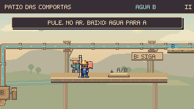
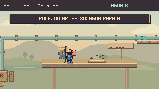

Nova revisão de level design: Escada de manutenção e recuperação local no Pátio — 16/10.
A rede de água
pelas fases.
Tubos apoiados no cenário, conexões com acabamento comum e água seguindo seus ramais. Esta rodada percorre o Pátio, os Respiros, a Câmara de Alívio, a Subida e o encontro com o Prefeito.


ANTESDEPOISA tubulação elevada ganhou cavaletes fixos no pátio e abraçadeiras que deixam o visor livre. O fluxo continua pelas curvas conforme a saída A/B realmente abastecida.
Peças que se encontram
Cavaletes, apoios, juntas e parafusos fixam as tubulações ao pátio e às paredes. Os encaixes preservam toda a largura dos visores e deixam claro onde a água entra e sai.
Estados que fazem sentido
A rede do bairro permanece seca antes da liberação. O retorno de alívio só recebe água depois da abertura da tampa. Na Subida, a comporta pública continua fechada enquanto a reserva particular é abastecida.
Água e conexões em movimento
Na Subida e no Prefeito, a água agora usa o relógio da simulação. Ela respeita pausa, impacto e reaparecimento. Depois de concluir a Subida, o fluxo ambiente continua com os mecanismos e o tempo da partida já encerrados.
Conferência durante a partida
Entradas de teclado, física, câmera e mecanismos nativos. Estes percursos são separados das poses preparadas para comparação. Simulação a 60 Hz e captura a 15 quadros por segundo.
Conferência desta rodada
924 testes de Guaíra e compilação aprovados. Doze comparações, cinco sequências de animação e seis percursos completos por controles nativos, todos sem dano. Teclado, pausa, estabilidade da janela e retorno ao mapa conferidos nas oito fases.
Comparações e percursos · Conferência no navegador · Conferência desta página · Registro técnico